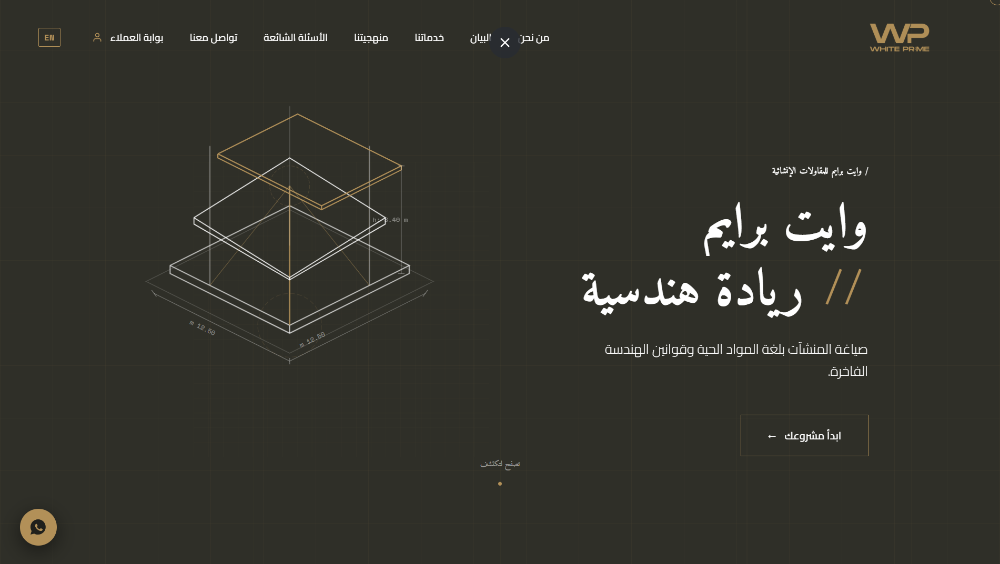

WHITE PRIME
وايت برايم للمقاولات العامة والتشييد

التحدي
يكمن التحدي الأساسي في تمثيل الهوية المعمارية الصلبة للشركة رقمياً، واستعراض مشاريعها الإنشائية الضخمة وتفاصيل مواد البناء المعقدة (مثل الخرسانة الظاهرة وتشكيل حديد التشييد) بطريقة تحريرية مبتكرة تبتعد عن القوالب الهندسية التقليدية، لتعكس الفخامة والجودة الاستثنائية للمطورين العقاريين.
الفكرة والمنهج
تبنى المشروع نظام شبكي سويسري صارم يحاكي خطوط ومستويات التشييد وبصمة البناء المعماري الفعلي. تم دمج خطوط إرشادية عمودية دقيقة (Guide Lines) وخلفية حيادية هادئة تعطي التركيز والتباين الأقصى للمواد الإنشائية الفاخرة والكتل العمرانية المعروضة.
بناء التجربة
تم ترتيب مسار التصفح ليكون بمثابة معرض رقمي يروي تفاصيل الدقة الهندسية لكل مشروع، مع تطوير مسار حركي تفاعلي مستمر مستند إلى الرسم الاتجاهي (Dynamic SVG Scroll Path) الذي يتشكل لحظياً أثناء التمرير ليرمز لرحلة البناء والتشييد والتأسيس من الصفر.
الاتجاه البصري
تباين متقن بين المساحات البيضاء النقية وتدرجات الرمادي والبرونز الدافئ، مع استخدام نصوص مونو وتفاصيل قياسات دقيقة تحاكي المخططات الهندسية الأصلية (Blueprints)، مما يضفي شعوراً بالجدية والدقة التشغيلية المتناهية للشركة.
العقبات والحلول
أثناء التصميم وتطوير الموقع، واجهتنا عقبة هامة وتم التغلب عليها كالتالي:
صعوبة إبراز دقة تفاصيل المواد البنائية
يصعب نقل جودة الخرسانة الفائقة والتفاصيل الدقيقة للصلب والخرسانة المكشوفة للعملاء عبر الشاشات التقليدية دون استخدام صور ضخمة الحجم تؤثر على أداء الموقع وسرعته.
عرض مقاطع تفصيلية مقربة وتثبيت معايير قياس حية
قمنا بالاعتماد على صور بتكبير تفصيلي (Macro-details) معالجة ومضغوطة بتقنية WebP الحديثة، مدعومة بنظام أرقام هندسية ونصوص دقيقة تشرح المقاييس ونسب المكونات المعتمدة، مما خلق مصداقية بصرية دون التأثير على سرعة استجابة الموقع.
النتيجة
بناء بوابة رقمية فاخرة تليق بشركة وايت برايم كشريك أساسي في التشييد المعماري الراقي، مما ساهم في ترسيخ علامتها التجارية وتعزيز ثقة المطورين العقاريين في مشاريع المجموعة المستقبلية.